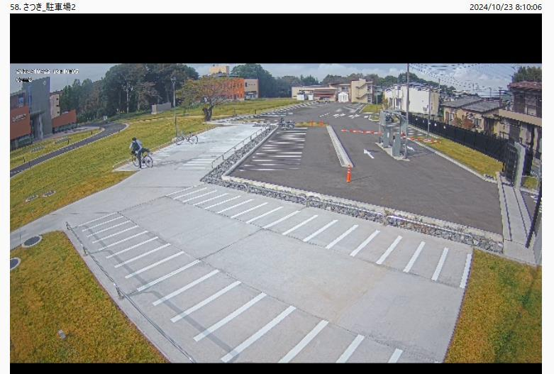
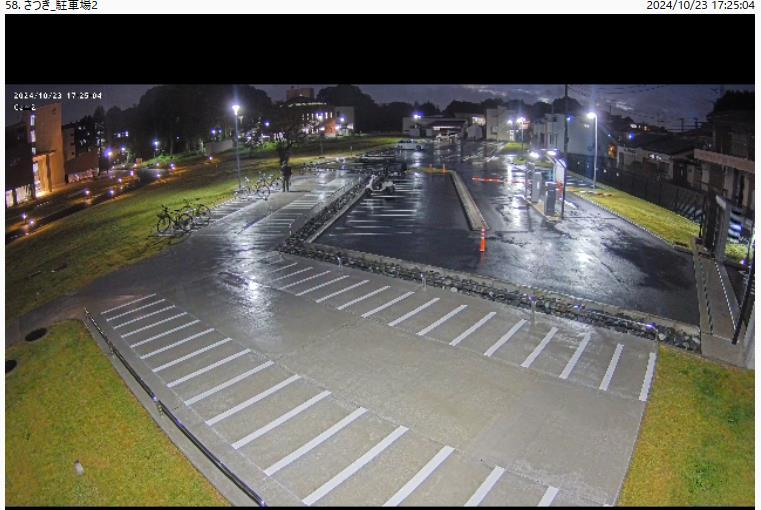
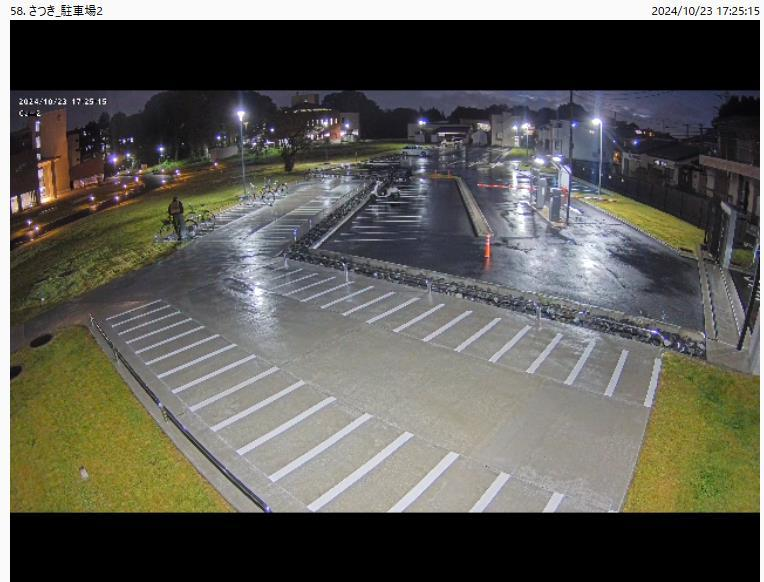
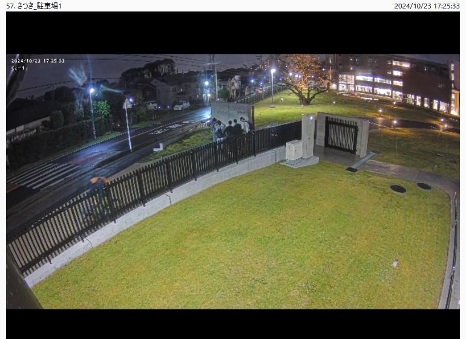
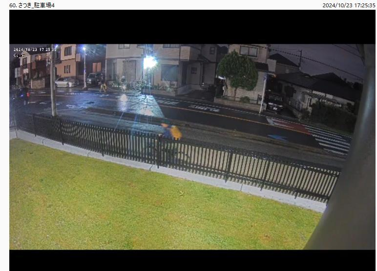
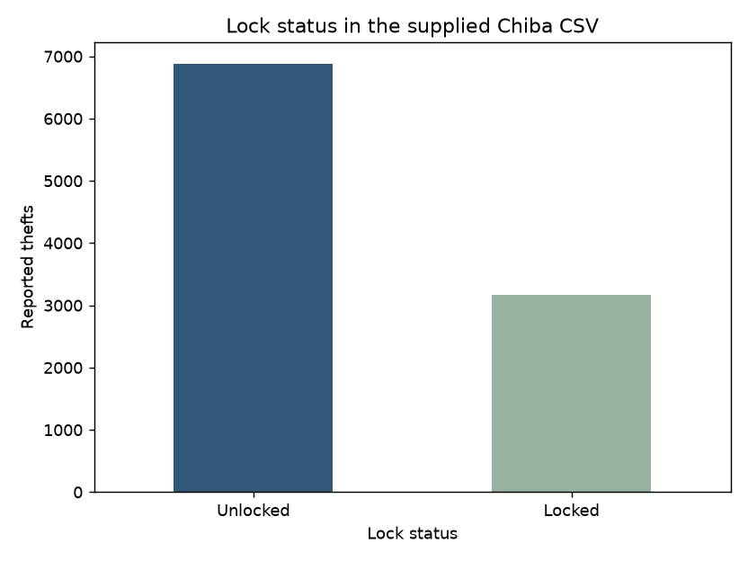

先週の天気アプリ。Last week’s weather apps.
使う人に、何ができるアプリ？ 実際に動かしながら、作品をクラスで振り返ります。Who is the app for, and what can it do? Run the work and review it together.
では、小テスト。Now: a short quiz.
これまでの入力・文字列・リスト・計算を、自分のコードで。12分、個人で取り組みます。Input, strings, lists and arithmetic, in your own code. Work individually for 12 minutes.
パスワードで開く → ダウンロード → VS Codeで準備。合図で開始。Unlock → download → open in VS Code. Start on the instructor’s signal.
6分 ＋ 6分6 minutes + 6 minutes
前半は自力。後半は教科書・ノート・教材・通常のWeb検索OK。12分を通して、生成AI・他者との相談は不可。First work independently; then use notes, textbooks, course materials and ordinary web search. No generative AI or collaboration during either phase.
12分後、途中でも提出。After 12 minutes: submit what you have.
week08_quiz_氏名.ipynb
解けたセルを実行して、出力を保存。UNIPAの小テスト提出先へ。Run the cells you have completed and save their outputs. Submit to the quiz assignment on UNIPA.
各問：指定された処理3点＋指定どおりの出力2点。問1-5は計算の手順も採点します。Each question: 3 points for the required logic and 2 for the required output. Question 1-5 must perform the specified calculation steps.
Tsukada先生の自転車が盗まれた。Tsukada sensei’s bike was stolen.

17:25:0417:25:04

17:25:1517:25:15

17:25:3317:25:33

17:25:3517:25:35

同じ資料の、拡大画像。An enlarged still from the same document.
まずは、千葉県警のデータへ。Start with Chiba Police open data.
2024年の学内事例から、県全体へ。公式サイトの「令和7年中の発生情報」→「自転車盗（CSV形式）」を開こう。From the 2024 campus case to the whole prefecture. On the official site, choose the 2025 section and its bicycle-theft CSV.
ダウンロード後、bicycle-theft.csvに名前変更。文字コードはCP932。問いを選び、件数・ランキング・グラフから防犯の提案を作ります。Rename the download to bicycle-theft.csv. Its encoding is CP932. Choose a question and use counts, rankings and a chart to recommend a prevention action.
千葉県警察が2025年分として公開している自転車盗CSV・10,054件（2026年11月18日取得）。発生年月日（始期）は2019〜2025年と不明を含みます。The Chiba Police 2025 bicycle-theft release: 10,054 records, retrieved November 18, 2026. Occurrence-start dates include 2019–2025 and unknown values.
10,054件の記録。10,054 incident records.
| 市区町村Municipality | 発生時（始期）Hour (start) | 施錠関係Lock status |
|---|---|---|
| 千葉市中央区 | 15 | 施錠した |
| 千葉市中央区 | 18 | 施錠した |
| 千葉市中央区 | 20 | 施錠した |
千葉県警察が2025年分として公開している自転車盗CSV・10,054件（2026年11月18日取得）。発生年月日（始期）は2019〜2025年と不明を含みます。The Chiba Police 2025 bicycle-theft release: 10,054 records, retrieved November 18, 2026. Occurrence-start dates include 2019–2025 and unknown values.
1行が1件。市区町村、場所、年月日、時刻、年齢、職業、施錠関係があります。One row is one record: municipality, place, date, hour, age group, occupation and lock status.
まず、CSVを読む。First, read the CSV.
空のNotebookを作り、公式CSVをbicycle-theft.csvに名前変更して同じフォルダへ。pandasは不要。Create a blank notebook. Rename the official CSV to bicycle-theft.csv and save it beside the notebook. No pandas required.
# 読み込むファイルを設定する（Notebookと同じフォルダに保存）
filename = "bicycle-theft.csv"
encoding = "cp932"
# 千葉県警のCSVはShift-JIS（CP932）。追加インストールは不要
import csv
with open(filename, encoding=encoding, newline="") as file:
incidents = list(csv.DictReader(file))
# 1行が1件の事件。件数を確認する
len(incidents)10054
リストの中に、辞書。A list of dictionaries.
# 最初の事件から、必要な列を選んで確認する
row = incidents[0]
row["市区町村（発生地）"], row["発生時（始期）"], row["施錠関係"]('千葉市中央区', '15', '施錠した')
incidents[0] は最初の1行。["列名"] で、その列の値を取り出します。incidents[0] is the first row. ["column name"] selects one value.
forで、1件ずつ数える。Count one record at a time.
# 集計したい列を選ぶ
column = "施錠関係"
counts = {}
# 同じ値が出てくるたびに、件数を1増やす
for row in incidents:
label = row[column]
counts[label] = counts.get(label, 0) + 1
counts{'施錠した': 3175, '施錠せず': 6879}
.get(label, 0)：まだないキーなら0。そこに1を足して、同じキーへ保存。.get(label, 0): start at zero for a new key, add one, then save it back.
柏市だけなら？What about Kashiwa?
# 調べたい市区町村を指定する
city = "柏市"
selected = []
# 条件に合う事件だけ、新しいリストへ入れる
for row in incidents:
if row["市区町村（発生地）"] == city:
selected.append(row)
len(selected)564
== は一致の確認。.append(row) は一致した1件をリストへ追加。市名を変えたら、どうなる？== checks equality. .append(row) adds a matching record. Predict what changes with another city.
件数の多い順に。Rank by incident count.
column = "市区町村（発生地）"
top_n = 5
# Counterは標準ライブラリ。未登録の値は0件から数える
from collections import Counter
counts = Counter()
for row in incidents:
counts[row[column]] += 1
# 件数の多い上位5組を取り出す
top_places = counts.most_common(top_n)
top_places[('船橋市', 1299), ('市川市', 871), ('松戸市', 725), ('千葉市中央区', 708), ('柏市', 564)]
Counter は標準ライブラリ。.most_common(5) は上位5組を返します。Counter is in the standard library. .most_common(5) returns the five most frequent pairs.
棒にすると、比べやすい。Make the comparison visible.
# 棒1個を何件にするか設定する
scale = 100
# 正確な件数も表示する（棒の長さは100件未満を切り捨て）
for place, count in top_places:
bar = "█" * (count // scale)
print(f"{place}: {bar} {count:,}件")船橋市: ████████████ 1,299件 市川市: ████████ 871件 松戸市: ███████ 725件 千葉市中央区: ███████ 708件 柏市: █████ 564件
棒1個 ≈ 100件。正確な数値も添える。この文字の棒グラフでもOK。Each block represents about 100 records. Include exact counts. This text bar chart meets the visual requirement.
pandasが使える人は。If pandas works for you.
# pandasが使える場合の別ルート。同じCSVを読む
filename = "bicycle-theft.csv"
encoding = "cp932"
import pandas as pd
df = pd.read_csv(filename, encoding=encoding)
# 列を1本選び、値ごとの件数を多い順に表示する
df["市区町村（発生地）"].value_counts().head(5)市区町村（発生地） 船橋市 1299 市川市 871 松戸市 725 千葉市中央区 708 柏市 564 Name: count, dtype: int64
value_counts()：値ごとの件数を降順に。head(5)：先頭5件だけ。value_counts() counts values in descending order. head(5) shows the first five.
同じ集計を、グラフへ。Turn the count into a chart.
# グラフの文字は英語にして、追加フォントを不要にする
import matplotlib.pyplot as plt
lock_counts = df["施錠関係"].value_counts()
lock_counts.index = lock_counts.index.map({
"施錠せず": "Unlocked", "施錠した": "Locked"
})
# 棒グラフを描く
lock_counts.plot.bar(color=["#315876", "#98b1a1"], rot=0)
plt.xlabel("Lock status")
plt.ylabel("Reported thefts")
plt.title("Lock status in the supplied Chiba CSV")
plt.tight_layout()
plt.show()
「盗難記録のうち、施錠せずが6,879件」。これだけでは施錠の効果や被害確率は分かりません。6,879 of the reported cases were unlocked. These counts alone cannot establish theft risk or the effect of locking.
何を、誰に伝える？What will you tell whom?
45分。空のNotebookから、自分の調査レポートを作る。地域・時間帯・年代・施錠などから、問いを一つ選ぼう。45 minutes. Build your own report in a blank notebook. Choose a question about location, time, age group or lock status.
- forで集計・絞り込みUse a for loop to count or filter
- ランキング＋グラフを一つ以上Include a ranking and at least one chart
- 数値を使った発見＋防犯の提案Explain a numerical finding and recommend an action
2分で、根拠を見せる。Two minutes. Show your evidence.
使った列とforの役割を説明。相手の「それは何を数えたの？」に答えよう。Explain the columns and the role of your for loop. Be ready to answer: what exactly did you count?
件数 ≠ 被害率。不明な日付・時刻は不明のまま扱う。緯度・経度はないので、地図は任意。Counts are not rates. Keep unknown dates and hours separate. Coordinates are not supplied; maps are optional.
同じレポートを、仕上げる。Finish the same report.
11月25日（水）23:59まで。コード・出力・グラフ・Markdownの説明を保存し、実行済み.ipynbをUNIPAへ提出。Due Wednesday, November 25 at 23:59 JST. Save code, outputs, chart and Markdown explanations; submit the executed .ipynb to UNIPA.
GitHubにもNotebookとCSVを保存し、Notebookへの直接リンクを添える。提出作品はクラスギャラリーへ。Save the notebook and CSV on GitHub too, and include the direct notebook link. Reports will appear in the class gallery.